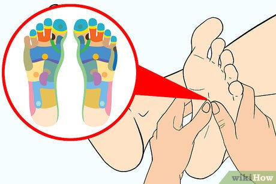

How to Choose the Best Foot Massager For Diabetics
Selecting a massager for your feet can be a challenge. They are, after all, different greatly in terms of quality and cost. There are numerous benefits of using a foot massager however, certain types are more efficient than others. The most popular benefits are the improvement of circulation, lessening tension and relieving the pain in your feet. There are additional reasons to purchase the foot
massager. Here are a few illustrations:
It's great for treating heel spurs fatigued feet, and sore muscles. best foot massager for plantar fasciitis
Diabetics are more prone to foot ailments. It is crucial for them to take care of their feet to control their condition and lead an active and healthy lifestyle. Massagers for feet can help fight the signs of circulatory issues and neuropathy. It is a great tool to use at the workplace, at home or during a relaxing visit for a spa. It can even make an ideal present to someone suffering from arthritis or neuropathy. However, it is important to be cautious when applying a foot massager to someone who is diabetic.
Another advantage of an foot massager is that it can be used for diabetics. While a foot massager may make life for diabetics simpler, it's essential to keep in mind certain aspects to consider when purchasing one. For those with arches that are high for instance, may not benefit from the device. Additionally, these devices don't use heating, which is why they are not suitable for those who have arches that are too high. Whatever the reason behind buying one, it is important to take into consideration the many advantages that a foot massager could give you.
A foot massager could help diabetics manage their conditions. They can ease the pain caused by fatigued feet and boost blood flow. Furthermore the use of a foot massager could enhance how varicose veins appear. A foot massager is also able to improve nerve function. It stimulates the nerves of the feet, making diabetics lower the risk of developing ulcers on their feet. This is the reason using a foot massager with adjustable intensity , and dual-mode would be the best choice for diabetics.

A foot massager could help those with diabetes manage their diabetes. A foot massager could give you a soothing experience that can benefit those with diabetes. A foot massager may assist in preventing nerve damage that is due to diabetes. Along with offering a relaxing experience the foot massager may also help ease the pain caused by circulation issues. If you're suffering from an elevated blood sugar level it is recommended to use a foot massager to improve blood circulation and boost the health of your feet.
Diabetics are more prone to various foot-related conditions. Making sure their feet are clean and healthy is vital in treating the problem. Massagers for feet can help stimulate circulation and help alleviate symptoms that are that are associated with neuropathy or circulatory issues. This is a fantastic alternative for diabetics and it can aid in reducing swelling. By boosting circulation of blood to feet, this could aid in managing the condition. It also can to improve their overall health. Massages on the feet can aid patients in managing their diabetes and improve their mobility.
In addition to helping improve circulation, a massager for your feet can also help improve circulation of your feet. It can also help to prevent the development of neuropathy and foot pain. A foot massager can assist you in relaxing and de-stressing your feet, while also helping increase circulation. When properly used they can to prevent neuropathy and other issues caused by diabetes. They also can help decrease inflammation and pain. Through promoting circulation, foot massagers are beneficial to people with diabetes.
If you're diabetic, try to stay clear of massagers for feet that come with an extremely high heat setting. These kinds of massagers can only be used for those who have arches that are very high. If you're looking for an even more efficient massager, look into RENPHO. RENPHO Foot Massager. It uses compression and rotation to deliver an effective and deep massage. The machine should not be used by those with arches that are too high, however the machine could cause nerve injury. best foot and calf massager
The benefits of a foot massager are not just about getting the foot massage. It can assist you in relaxing after an exhausting day at work or increase circulation. If you're suffering from diabetes and have a foot-massage device, it can aid in improving circulation and lessen discomfort. Apart from easing your feet, this device also helps improve your overall health. If you're diabetic, you need to care for your feet. With the foot massager, you can avoid numerous issues caused by nerves.